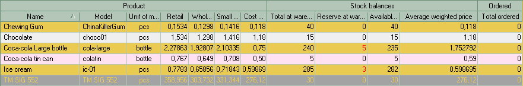
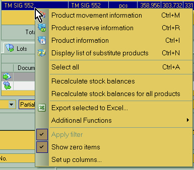
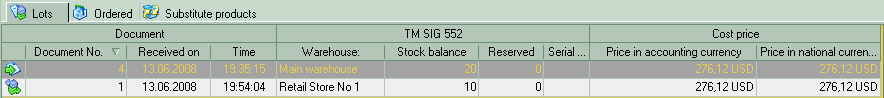
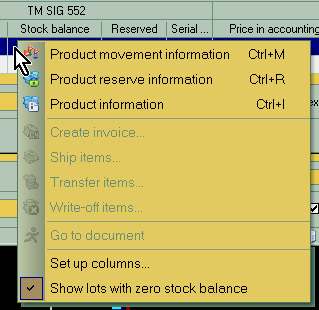
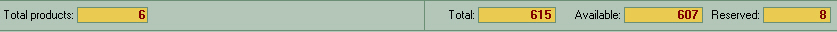
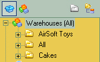
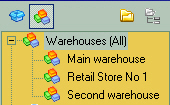
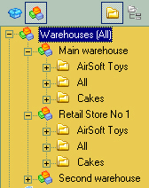

|
Products list

The following categories are available under Product section: Product Name, model, unit of measure, user-defined sale prices such as Retail, Wholesale and Small Wholesale in this example as well as average purchasing price or Cost price for your convenience to have a better understanding of your profit levels.
Stock balances section consists of product Total quantity at warehouse(s), product quantity in reserve, which cannot be included in the new documents, available products calculated as total less reserved, average weighted price to show average purchasing price of the product over a period of time to better understand purchasing price dynamics.
Ordered section is only to show the amount of product currently ordered and still not sold or shipped out to customers, e.g. pre-ordered amount of goods.
Main right-click menu

| • | Product movement information - displays the list of actual stock transfer slips where this product is included as one of the items |
| • | Product reserve information - detailed information on product quantity on reserve at different warehouses |
| • | Product information - detailed information on the product itself. The same dialog used for product description editing, but in read-only mode |
| • | Display list of substitute products - displays the list of substitute products (similar in quality and functionality) |
| • | Recalculate stock balances - looks up all purchasing, sales or transfer documents and displays quantity of the product included in these documents in products table. This option is useful in multi-user environment with frequent database updates, allows you to always get the actual information on product quantities. It also allows users to quickly fix various errors due to possible database corruption. |
| • | Recalculate stock balances for all products - same as above, but applies to all products in the database.
Caution! This operation may be very time consuming and may cause delays in your server operation. |
| • | Export selected to Excel - generates Microsoft Excel compatible spreadsheet with selected products. You will be able to select information fields to be exported. |
Additional Functions:
| • | Create supply orders by minimum balances. - Creates the order to your supplier containing all the products that have their "minimum amount that should be available at warehouse" set to non-zero and the actual amount is below the threshold. |
| • | Show zero items - The quick filter feature that toggles display of products with zero available quantity at warehouse. |
| • | Set up columns - allows you to set up the fields you want displayed. |
|
Lots list

It is common practice to register goods at warehouse in batches or lots, as they are purchased or transferred from other warehouses.
In this table you can check which lots were sold out, and which are still available. This option may be useful if you are dealing with food and drug supplies with limited shelf life or older and newer models of equipment.
The icon on the left indicates the type of document where this lot belongs. In this case stands for Goods receipt slip and in the line below is Goods transfer slip
Received on - the date and time when this lot was received at warehouse.
Stock balance - actual product quantity at warehouse
Lots list right-click menu

| • | Product movement information - displays the list of actual stock transfer slips where this product is included as one of the items |
| • | Product reserve information - detailed information on product quantity on reserve at different warehouses |
| • | Product information - detailed information on the product itself. The same dialog used for product description editing, but in read-only mode |
| • | Create invoice - if there is some goods available from this lot, then you can make invoice including this product as first position right here |
| • | Ship items - generates Goods dispatch slip with this product as the first item |
| • | Transfer items - generates Goods transfer slip to move some of the product to another warehouse |
| • | Write-off items - allows you to write-off outdated or expired goods. |
| • | Show lots with zero stock balance - Display or don't lots with zero available quantities. |
|
Bottom counter bar

At the bottom of program window there is a counter showing the count of total products in this category, total quantity of selected products and quantity reserved and available.

Simple style.
Only categories of products are shown.
Allows you quickly find the specific product
|

Warehouse-oriented style.
Displays only warehouses.
Allows you to see a general picture of products availability for each warehouse
|

Combined style.
Warehouses displayed with products categories trees of their own.
Uses all benefits of the two basic styles for your convenience.
|
Examples of possible combinations of warehouse and product categories displaying tree
Note the buttons active at the top pane for each tree style.
|
|